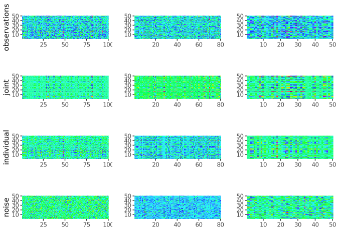

rajiveutils (Robust Angle based Joint and Individual Variation Explained) is a robust alternative to the aJIVE method for the estimation of joint and individual components in the presence of outliers in multi-source data. It decomposes the multi-source data into joint, individual and residual (noise) contributions. The decomposition is robust with respect to outliers and other types of noises present in the data.
Installation
You can install the released version of rajiveutils from CRAN with:
install.packages("rajiveutils")And the development version from GitHub with:
# install.packages("devtools")
devtools::install_github("mdmanurung/RaJIVEutils")Example
This is a basic example which shows how to use rajiveutils on simple simulated data:
Running robust aJIVE
library(rajiveutils)
## basic example code
n <- 50
pks <- c(100, 80, 50)
Y <- ajive.data.sim(K =3, rankJ = 3, rankA = c(7, 6, 4), n = n,
pks = pks, dist.type = 1)
initial_signal_ranks <- c(7, 6, 4)
data.ajive <- list((Y$sim_data[[1]]), (Y$sim_data[[2]]), (Y$sim_data[[3]]))
ajive.results.robust <- Rajive(data.ajive, initial_signal_ranks)The function returns a list of class "rajive" containing the RaJIVE decomposition, with the joint component (shared across data sources), individual component (data source specific) and residual component for each data source.
Inspecting the decomposition
- Print a concise overview:
print(ajive.results.robust)
#> RaJIVE Decomposition
#> Number of blocks : 3
#> Joint rank : 2
#> Individual ranks : 6, 5, 2- Summary table of all ranks:
summary(ajive.results.robust)
#> block joint_rank individual_rank
#> block1 2 6
#> block2 2 5
#> block3 2 2
get_all_ranks(ajive.results.robust)
#> block joint_rank individual_rank
#> 1 block1 2 6
#> 2 block2 2 5
#> 3 block3 2 2- Joint rank:
get_joint_rank(ajive.results.robust)
#> [1] 2- Individual ranks:
get_individual_rank(ajive.results.robust, 1)
#> [1] 6
get_individual_rank(ajive.results.robust, 2)
#> [1] 5
get_individual_rank(ajive.results.robust, 3)
#> [1] 2- Shared joint scores (n × joint_rank matrix):
get_joint_scores(ajive.results.robust)- Block-specific scores and loadings:
# Joint scores for block 1
get_block_scores(ajive.results.robust, k = 1, type = "joint")
#> [,1] [,2]
#> [1,] -0.1394751666 -0.050804688
#> [2,] 0.1198928579 -0.226972298
#> [3,] -0.0373309235 0.034072563
#> [4,] 0.1808582163 -0.086392597
#> [5,] 0.1779003540 0.309271094
#> [6,] 0.2398001064 0.064001270
#> [7,] -0.0180452382 0.001153290
#> [8,] -0.1413878957 0.166307930
#> [9,] -0.1408348112 -0.300498110
#> [10,] 0.1422526284 -0.218507722
#> [11,] 0.0527506559 -0.082573209
#> [12,] 0.0657886159 -0.091621648
#> [13,] -0.0238956336 -0.128639766
#> [14,] 0.0116950664 0.009403486
#> [15,] 0.0414044490 0.029699123
#> [16,] 0.3502648592 -0.088857038
#> [17,] -0.1837776470 0.193831946
#> [18,] 0.0538411786 -0.120165448
#> [19,] -0.0108206727 0.083193748
#> [20,] 0.1709012939 -0.222225299
#> [21,] -0.0481601184 0.045491021
#> [22,] 0.0526003779 0.162349036
#> [23,] 0.1924369375 0.041231605
#> [24,] -0.1989272552 -0.125286414
#> [25,] -0.1856724369 0.215590139
#> [26,] -0.2286948719 0.099357955
#> [27,] 0.0007061748 -0.021763428
#> [28,] 0.0449359783 -0.055738772
#> [29,] -0.1691680472 -0.068256072
#> [30,] -0.0963015988 -0.201752122
#> [31,] 0.0316661551 0.122256001
#> [32,] -0.2623003013 -0.078618228
#> [33,] -0.0464663045 -0.002947326
#> [34,] -0.0760503642 -0.111823676
#> [35,] 0.0652109012 0.088587385
#> [36,] 0.1133509119 0.158337082
#> [37,] 0.0481904781 -0.126345456
#> [38,] 0.1038374769 0.286743635
#> [39,] 0.1290602713 -0.230629131
#> [40,] -0.0874897845 -0.027796484
#> [41,] -0.0369173881 -0.004258920
#> [42,] 0.0965357735 -0.229795705
#> [43,] -0.1555492336 -0.019085578
#> [44,] 0.0516607754 -0.062697186
#> [45,] 0.0072879504 -0.075140832
#> [46,] 0.0820633666 -0.157220835
#> [47,] -0.1272605479 -0.254261492
#> [48,] 0.1166190713 -0.012427435
#> [49,] -0.3476422252 -0.026082078
#> [50,] -0.2206561000 -0.009693884
# Individual loadings for block 2
get_block_loadings(ajive.results.robust, k = 2, type = "individual")
#> [,1] [,2] [,3] [,4] [,5]
#> [1,] -0.085708466 -0.018415931 -0.0630329248 -0.085466160 -0.078090429
#> [2,] 0.047595173 -0.107143339 0.1688664812 -0.038142148 -0.031407192
#> [3,] -0.152258157 -0.150294248 0.0912094148 0.042289824 0.029366043
#> [4,] 0.053093355 -0.012028820 -0.0697415349 0.101984552 0.226671049
#> [5,] -0.019199669 0.089401913 0.0681978112 0.025608569 -0.059061125
#> [6,] 0.109406876 0.130626467 -0.0783945222 0.057694244 -0.005252635
#> [7,] -0.151567182 0.103904528 -0.0702465706 0.056914946 -0.331557859
#> [8,] 0.017025293 -0.032718326 -0.0233623557 -0.065742827 -0.046413369
#> [9,] 0.032568382 0.263366738 0.0006863963 0.053312647 0.011106636
#> [10,] 0.106492721 -0.026816473 0.0760229976 0.025602085 0.069824598
#> [11,] -0.160619416 0.091320472 -0.1786700493 -0.133195198 -0.073350876
#> [12,] 0.064757889 -0.071671257 -0.2427054807 0.041241534 0.075165602
#> [13,] 0.180663955 0.057338611 -0.1154475193 0.106082246 -0.120989698
#> [14,] 0.025087178 0.095494296 -0.1275783477 -0.186360800 0.034837902
#> [15,] -0.139120972 0.121304011 -0.0909655658 0.097057727 -0.066956818
#> [16,] 0.031827356 -0.256277108 -0.1006677815 -0.033237963 0.125303259
#> [17,] -0.087322493 -0.025098589 -0.0666959885 0.041297509 -0.154590070
#> [18,] 0.031163502 -0.013567853 -0.2316822183 0.141058340 0.017125912
#> [19,] 0.202382134 -0.070650281 0.0760443482 -0.056355518 0.134126084
#> [20,] -0.073940892 -0.225452390 0.1943651336 -0.037902662 -0.002094080
#> [21,] -0.034233853 0.146321521 0.2317141199 0.180715681 0.041319033
#> [22,] -0.034249905 0.015721633 -0.1005713653 -0.029908214 -0.111636756
#> [23,] -0.086588845 0.093640100 -0.1901973077 0.007465244 -0.096739615
#> [24,] 0.265183842 0.021407560 -0.1428384204 0.030123639 -0.133423150
#> [25,] 0.051479607 -0.155840386 -0.1270937140 -0.218062828 -0.055171572
#> [26,] -0.043939294 -0.036469776 -0.0005638452 -0.242512185 -0.101121466
#> [27,] -0.011330687 0.035172968 0.0850497705 -0.009399629 0.018547609
#> [28,] 0.012753492 0.016226840 0.0660633310 0.008405484 -0.015607762
#> [29,] 0.074409734 -0.089123678 -0.1287094121 -0.014969101 0.097373804
#> [30,] 0.073080410 -0.162249641 -0.0170350167 0.018432335 -0.250700465
#> [31,] -0.037356445 -0.081366800 -0.0587941894 0.088865114 0.118723866
#> [32,] -0.190535490 0.062061047 -0.0338473314 -0.280640469 0.007474293
#> [33,] 0.182276005 -0.098604651 0.0724072496 -0.195543210 0.049270279
#> [34,] -0.076259213 -0.037377451 0.0459506305 -0.007478297 -0.116183120
#> [35,] 0.053347441 -0.088879533 0.0776491397 -0.080262331 -0.044924370
#> [36,] -0.101888222 -0.032583385 0.2263263181 0.056462505 0.159985903
#> [37,] 0.032306405 0.005460701 0.0618483656 0.015253755 -0.150445669
#> [38,] -0.155399616 0.181824122 -0.0019851720 0.033786990 0.058939028
#> [39,] -0.160740223 -0.007606331 -0.0547378207 -0.085416868 0.130803345
#> [40,] -0.062494885 0.039402959 -0.0484315210 -0.017530715 0.140021937
#> [41,] -0.068353397 -0.130214840 -0.1716116664 -0.060675515 0.075001045
#> [42,] -0.015580882 0.032576553 -0.0167352291 -0.067505791 0.139699753
#> [43,] 0.027866301 0.065875508 0.3274805243 -0.127762938 -0.031487329
#> [44,] 0.171635725 -0.106622697 -0.0780350233 0.127641243 -0.114817060
#> [45,] 0.088328203 0.125372025 0.1006481776 0.063860732 0.145688644
#> [46,] -0.023754351 0.028817817 -0.0179320407 0.072801921 0.067506281
#> [47,] 0.007708329 0.102085702 -0.0615692102 -0.299533890 0.112703809
#> [48,] 0.008895266 0.009061096 -0.2147150224 0.019468331 -0.075118374
#> [49,] -0.045857766 -0.063383803 -0.0355748040 0.012849301 0.089053703
#> [50,] -0.063605353 0.134708048 0.0922488768 0.138135039 0.128407564
#> [51,] 0.018138850 -0.014089774 -0.0813650318 0.007690571 0.059109687
#> [52,] 0.157548250 0.022309301 0.0466578607 -0.057254444 0.080713214
#> [53,] 0.198893631 0.008451016 0.0113587907 -0.099331350 0.110383421
#> [54,] -0.053757989 -0.094022468 0.1069294959 0.055483356 0.218496182
#> [55,] -0.127591182 0.137198763 -0.0193887881 -0.075802786 0.149086910
#> [56,] -0.110018363 -0.179198116 -0.0652479796 0.083346859 -0.041779075
#> [57,] -0.004026532 0.050192008 0.1305821995 0.093790272 -0.149658051
#> [58,] 0.086532082 0.027953800 -0.1427890406 0.042984754 0.172617877
#> [59,] -0.084391396 0.109278718 0.0880867445 0.004365258 -0.027088655
#> [60,] 0.156105448 -0.208962305 0.0096395797 -0.075673276 -0.042380144
#> [61,] -0.175360945 -0.049494305 0.0778834368 -0.076077804 0.031443075
#> [62,] -0.018069060 -0.052694311 0.2033833647 0.268519445 -0.089999841
#> [63,] -0.112072554 -0.097344912 -0.0212634169 0.002104423 0.042073567
#> [64,] 0.013065043 0.074915868 0.0174767815 -0.441261671 0.005888312
#> [65,] 0.107573354 0.146379452 -0.0807274422 0.021918599 0.063529247
#> [66,] -0.056121238 -0.014603260 -0.0251177735 0.014996234 0.183830290
#> [67,] -0.130857852 0.084328521 0.0459380864 -0.057915585 0.147403800
#> [68,] -0.005529784 -0.290186880 -0.0391436763 -0.025817590 -0.169494825
#> [69,] -0.075455539 0.101506325 0.0255352564 0.006865310 -0.182600066
#> [70,] 0.008577333 -0.254652592 0.0387369812 0.179654803 0.189852470
#> [71,] -0.124460440 -0.067708414 0.0994412184 -0.016063450 -0.065333998
#> [72,] -0.115243289 -0.151639402 -0.1398059423 0.091774120 0.087650429
#> [73,] -0.090667363 -0.169532740 -0.0395392297 0.116533043 0.060291646
#> [74,] -0.120328530 -0.095717790 0.2028570429 -0.063343715 -0.171846236
#> [75,] -0.245394292 -0.020146652 -0.0427557428 0.120799012 0.005749098
#> [76,] 0.047208313 0.112695727 -0.0430759064 0.081024162 0.039343977
#> [77,] -0.115913795 0.112729912 -0.1154717073 0.077841445 0.017861611
#> [78,] 0.373869281 0.110940761 0.1093946321 0.038820254 -0.033814941
#> [79,] -0.022784366 0.104880918 0.0512834602 -0.014161862 -0.076286626
#> [80,] 0.055073633 0.112202971 0.0027187450 -0.082984609 0.061227343- Full reconstructed matrices (J, I, or E) for a block:
J1 <- get_block_matrix(ajive.results.robust, k = 1, type = "joint")
I2 <- get_block_matrix(ajive.results.robust, k = 2, type = "individual")
E3 <- get_block_matrix(ajive.results.robust, k = 3, type = "noise")Visualizing results
- Heatmap decomposition:
decomposition_heatmaps_robustH(data.ajive, ajive.results.robust)
- Proportion of variance explained (as a list):
showVarExplained_robust(ajive.results.robust, data.ajive)
#> $Joint
#> [1] 0.2768646 0.2734908 0.4336092
#>
#> $Indiv
#> [1] 0.5873406 0.5611743 0.2963845
#>
#> $Resid
#> [1] 0.1357948 0.1653349 0.2700063- Proportion of variance explained (as a bar chart):
plot_variance_explained(ajive.results.robust, data.ajive)- Scatter plot of scores (e.g. joint component 1 vs 2 for block 1):
plot_scores(ajive.results.robust, k = 1, type = "joint",
comp_x = 1, comp_y = 2)
# Colour points by a grouping variable
group_labels <- rep(c("A", "B"), each = n / 2)
plot_scores(ajive.results.robust, k = 1, type = "joint",
comp_x = 1, comp_y = 2, group = group_labels)Jackstraw significance testing
After running the RaJIVE decomposition, you can test which variables in each data block have statistically significantly non-zero joint loadings using the jackstraw permutation test:
# Run jackstraw test (increase n_null to 50-100 for publication-quality results)
js <- jackstraw_rajive(ajive.results.robust, data.ajive,
alpha = 0.05, n_null = 10,
correction = "bonferroni")
# Print a concise summary table
print(js)
# Get a data frame summary
summary(js)- Retrieve significant variables for a given block and component:
get_significant_vars(js, block = 1, component = 1)- Visualize jackstraw results (three plot types available):
# P-value histogram
plot_jackstraw(js, type = "pvalue_hist", block = 1, component = 1)
# F-statistic vs -log10(p-value) scatter plot
plot_jackstraw(js, type = "scatter", block = 1, component = 1)
# Heatmap of -log10(p-value) across all joint components for one block
plot_jackstraw(js, type = "loadings_significance", block = 1)Function reference
Core decomposition
| Function | Description |
|---|---|
Rajive() |
Run the RaJIVE decomposition on a list of data matrices. Returns an object of class "rajive". |
ajive.data.sim() |
Simulate multi-block data with known joint and individual structure for testing and benchmarking. |
Rank accessors
| Function | Description |
|---|---|
get_joint_rank() |
Extract the estimated joint rank from a "rajive" object. |
get_individual_rank() |
Extract the individual rank for a specific data block. |
get_all_ranks() |
Return a data.frame of joint and individual ranks for all blocks at once. |
Component accessors
| Function | Description |
|---|---|
get_joint_scores() |
Return the shared n x r_J joint score matrix (r_J = joint rank). |
get_block_scores() |
Return the score matrix (U) for a given block and component type (joint or individual). |
get_block_loadings() |
Return the loading matrix (V) for a given block and component type. |
get_block_matrix() |
Return the full reconstructed matrix (J, I, or E) for a given block and component type. |
S3 methods for "rajive" objects
| Function | Description |
|---|---|
print.rajive() |
Print a concise summary of ranks for a "rajive" object. |
summary.rajive() |
Return and print a data.frame of all estimated ranks. |
Variance explained
| Function | Description |
|---|---|
showVarExplained_robust() |
Compute the proportion of variance explained by joint, individual, and residual components for each block (returns a list). |
plot_variance_explained() |
Stacked bar chart of variance explained by each component and block. |
Visualisation
| Function | Description |
|---|---|
decomposition_heatmaps_robustH() |
Heatmaps of the raw data and the joint, individual, and noise components for all blocks. |
plot_scores() |
Scatter plot of two score components for a given block (joint or individual), with optional group colouring. |
Jackstraw significance testing
| Function | Description |
|---|---|
jackstraw_rajive() |
Run the jackstraw permutation test to identify variables with significantly non-zero joint loadings. Returns a "jackstraw_rajive" object. |
print.jackstraw_rajive() |
Print a significance table for a "jackstraw_rajive" object. |
summary.jackstraw_rajive() |
Return and print a data.frame summary of jackstraw results. |
get_significant_vars() |
Extract significant variable names/indices for a given block and component from jackstraw results. |
plot_jackstraw() |
Diagnostic plots for jackstraw results: p-value histogram, F-stat scatter plot, or loadings significance heatmap. |